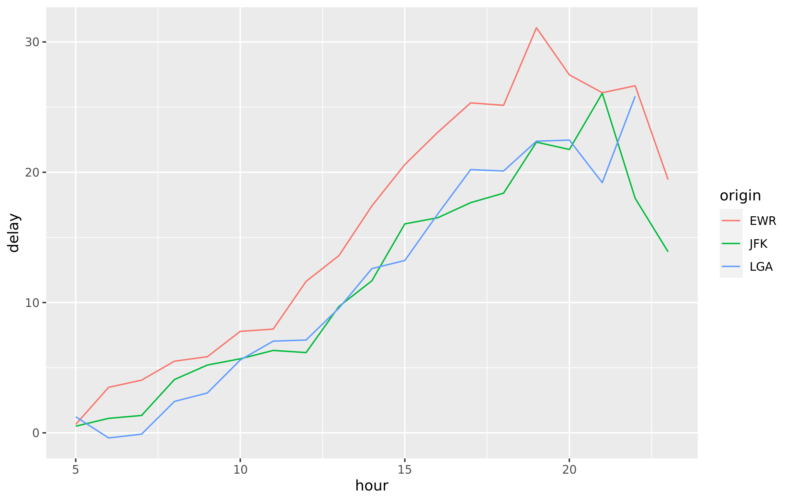

dplyr as a database interface
The dplyr package simplifies data transformation. It provides a consistent set of functions, called verbs, that can be used in succession and interchangeably to gain understanding of the data iteratively.
dplyr is able to interact with databases directly by translating the dplyr verbs into SQL queries. This convenient feature allows you to ‘speak’ directly with the database from R. Other advantages of this approach are:

Run data exploration routines over all of the data, instead of importing part of the data into R.
Use the SQL Engine to run the data transformations. In effect, computation is being pushed to the database.
Collect into R only a targeted dataset.
All of your code is in R. Because
dplyris used to communicate with the database, there is no need to alternate between languages or tools to perform the data exploration.
Connect to a database

At the center of this approach is the DBI package. This package acts as ‘middle-ware’ between packages to allow connectivity with the database from the user or other packages. It provides a consistent set of functions regardless of the database type being accessed. The dplyr package depends on the DBI package for communication with databases.
There are packages that enables a direct connection between the an open-source database and R. Currently, such packages exist for the following databases: MySQL, SQLite, PostgreSQL, and bigquery.

Most commercial databases, like Oracle and Microsoft SQL Server, offer ODBC drivers that allow you to connect your tool to the database. Even though there are R packages that allow you to use ODBC drivers, the connection will most likely not be compatible with DBI. The new odbc package solves that problem by providing a DBI backend to any ODBC driver connection.
If you are interested in creating your own package that connects DBI to a database, please review the article DBI Backend.
SQL Translations for dplyr
A complementary package called dbplyr contains the translations of the vendor-specific SQL for dplyr to use. A list of known supported databases are available in our Databases page.
Is the database you are interested in not listed here? You can still use DBI and odbc to connect and send SQL queries. If you would like to contribute a translation, please see the SQL Translation page in this website.
Example
The same dplyr syntax used with data in R will also work with data in a database. In the example below, data from the nycflights13 package are loaded into a SQLite database then queried from R. The results from the query are then collected into R and visualized with ggplot2. The process is the same if you are using an enterprise data warehouse — like Microsoft SQL Server or Snowflake’s data cloud.
library(DBI)
library(dplyr)
library(ggplot2)
# SQLite database
con <- dbConnect(RSQLite::SQLite(), ":memory:")
copy_to(con, nycflights13::flights, "FLIGHTS")
# ODBC databases (requires a live database connection)
#con <- dbConnect(odbc::odbc(), "SQL Server")
#con <- dbConnect(odbc::odbc(), "Snowflake")
# Query, collect results, and visualize
tbl(con, "FLIGHTS") %>%
filter(distance > 75) %>%
group_by(origin, hour) %>%
summarise(delay = mean(dep_delay, na.rm = TRUE)) %>%
collect() %>%
ggplot(aes(hour, delay, color = origin)) + geom_line()